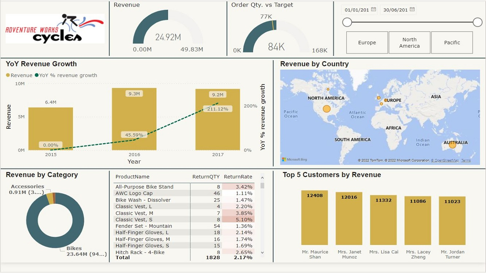

AW Cycles Sales Report
Power BI

My very first PBI project I created this report, while following an online course led by Mr. Lokesh Lalwani. This course helped me immensly, to get familiar with tons of concepts, ranging from basic upto intermediate. Here, I will hihglight few of the key learnings which I took from this course
- Connecting PBI with different data sources.
- Benefit of connecting with a folder : In case, when we have to add multiple files of same type, and if we know we will get another same type of file after some interval, e.g. yearly or monthly data, we can create a folder for those files, keep those files in that folder, and instead of adding those multiple files individually, we can instead connect to folder. Advantage:
- Next time, when we will get other file, lets say next years sales data, we dont have to manually add that file to PBI and repeat the same process. Since we have created the connection with the folder, we just have to add file to the folder, and refresh on PBI part, thats it.
- Also, we dont have to care about filename consistency, otherwise it we would have created connection to the file, changing the filename or any alteration in filename would break connection as PBI can't recognize with changed filename.
- Importance of checking data type of each column thoroughly each time we load data, because if missed, later will create issues in analyzing data. E.g. if Date column is in text format, we will not be able to perform Date related functions.
- categorizing tables as Dimension or Fact
- Giving proper name to applied step, as by time steps may keep increasing and if we will come later, we might not be able to recollect which step is doing what or we may not be able to find a particular step directly.
- Data transformation through Power Query.
- Building a complete calendar table and importance of having one.
- Data Modelling, relationship cardinality.
- Snowflake and star schema.
- DAX: Calculated columns & Measures.
- Basic DAX functions with logical operators.
- Bringing data from any related table using RELATED function.
- Understanding FILTER & ROW Context.
- CALCULATE
- Iterator functions
- CrossFilter function.
- YTD, MTD calculation, prev year/month calculation
- Report View, Page setup
- Visualization, charts, map
- Monthly trend, forecasted revenue with line chart
- KPIs
- Drillthrough report page
- Row Level Security
- Publish Report tp PBI service
- Dashboard
- Gateways & Scheduled Refresh